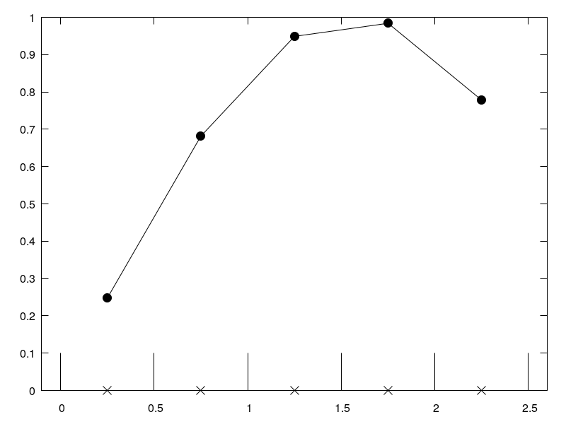

2.3.1. Field Define¶
2.3.1.1. Problem Description¶
This cases just a simple illustration of the definition of the structure field. Every scalars is defined at the center of the control volume.
2.3.1.2. Illustration¶
2.3.1.2.1. 1D field¶
We have One-dimension field from x = 0 to x = 2.5. There are 5 control volumes.

Fig. 2.23 One dimension field.¶
2.3.1.3. Case Information¶
Run time infomation:
Functions |
Wall Time (s) |
|---|---|
dt_cmake |
0.001787 |
dt_make |
0.000937 |
dt_run |
0.000779 |
dt_plot |
0.000108 |
File |
Creat Time |
Modified Time |
|---|---|---|
main.cpp |
2018-12-19 20:22:11.956501 |
2018-12-19 20:22:11.956501 |
CMakeLists.txt |
2018-12-11 19:12:23.514256 |
2018-11-10 22:18:44.403381 |
run.py |
2019-05-23 20:20:27.332053 |
2019-05-23 20:20:27.332053 |
report.rst |
2019-05-23 20:20:08.971441 |
2018-12-19 20:41:14.128218 |